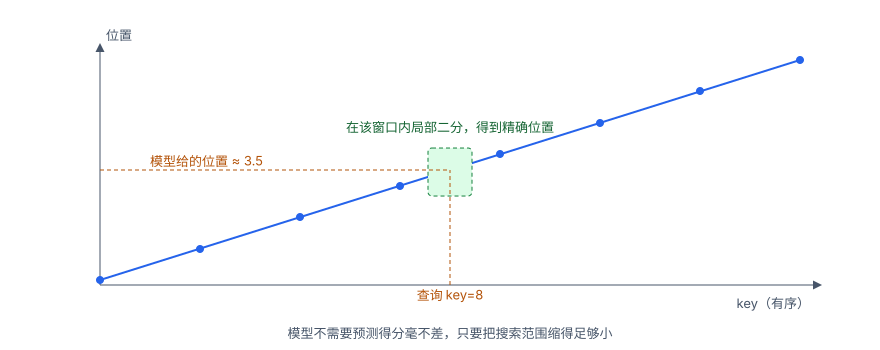
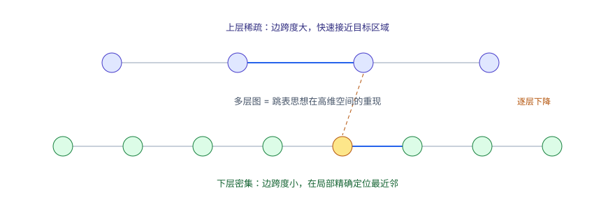

AI 与数据结构的交叉
经典结构假设数据“一视同仁”，而真实数据常有明显的偏态与规律。把结构的一部分换成一个学出来的模型，或者让它随访问模式在线调整，会带来新的可能——也会把老问题重新摆到台面上。
当数据结构遇上 AI
七十年来，数据结构的设计大多靠“人肉分析”：专家分析问题、设计结构、证明复杂度、再实现。这个过程中隐含了一条假设：数据本身没有可利用的规律。B+ 树的二分对应的是“均匀分布”，哈希表靠的是“哈希后近似随机”。
但真实数据往往不是均匀的：用户 ID、请求频率常常呈现明显的偏态（少数键被反复访问）。一个能“看”出这种规律的结构，可以为热数据做优化，而不是对所有数据一视同仁。这就是 AI 与数据结构交叉的起点：把结构的一部分换成一个从数据里学出来的组件。
| 方向 | 换掉了什么 | 状态（截至本课程更新） |
|---|---|---|
| 学习型索引 | 用模型预测位置，替掉部分搜索 | 研究为主，有试验性落地 |
| 学习型布隆过滤器 | 用模型先过滤，再交给经典位数组 | 研究阶段 |
| 自适应结构 | 运行时根据访问模式调整自身 | 部分已在生产使用 |
| 图神经网络 | 在图结构上做深度学习 | 推荐等场景已生产使用 |
| 向量数据库 | 高维空间的近似最近邻 | 已广泛使用 |
“状态”一列是教学示意的粗略描述，用来避免把研究原型当成生产线产品；具体项目请查各自文档。
学习型索引
回看 B+ 树的查找：在每一层节点内部做二分，走完整条树。学习型索引（Learned Index，Kraska 等，2018）的想法是：如果知道 key 的累积分布，就能直接“算出”它大概在第几个位置。对均匀分布的有序数组，位置几乎是一个线性函数，一次乘法就能估算出来。

关键在于它不要求预测精准。模型只需把搜索范围从整个数组缩到一个小窗口，剩下的用几行二分完成。误差越小，窗口越小，理论上平均查找就越接近 O(1)。
class LearnedIndex:
"""线性“模型” + 局部二分（教学示意，非完整的 learned index）"""
def __init__(self, sorted_keys):
self.keys = sorted_keys
self.lo, self.hi = sorted_keys[0], sorted_keys[-1]
def predict(self, key):
ratio = (key - self.lo) / (self.hi - self.lo)
return int(ratio * (len(self.keys) - 1))
def find(self, key):
pos = self.predict(key)
lo, hi = max(0, pos - 4), min(len(self.keys) - 1, pos + 4)
while lo <= hi: # 小窗口内精确二分
mid = (lo + hi) // 2
if self.keys[mid] == key:
return mid
if self.keys[mid] < key:
lo = mid + 1
else:
hi = mid - 1
return -1现实中的学习型索引会用分段模型或小型神经网络来拟合更复杂的分布，但“预测 + 局部搜索”这个骨架不变。真正的难点在于：分布会变、插入删除会使模型过期，而重训练很贵。
看模型把 key 预测到哪个位置
有序数组为 [1,3,5,7,9,11,13,15]（共 8 个）。这是线性模型，输出为教学示意。
学习型布隆过滤器
布隆过滤器（在第 22 章讲 LSM 树时提到过）用一组哈希函数把元素映射到位数组，能快速回答“这个 key 肯定不在集合里”。代价是“在”可能有假阳性，且所有 key 一视同仁。
学习型布隆过滤器的思路是分层：用一个简单的模型先把“大概率不在”的查询过滤掉，只有模型拿不准的才交给经典布隆过滤器。只要模型能准确判断一部分“不在”，就能在保持假阳性率相近的前提下用更少的内存。
这个例子的启示在于：AI 组件往往是与经典结构叠加，而不是取代它。过滤器依然存在，只是多了一层前面的“快速判断”。
自适应数据结构
学习型索引是“离线学”的：模型先训好，再部署。另一条路线是“在线学”：结构在运行时根据访问模式调整自身。策略很简单——把最近访问过的东西放到更容易到达的位置。
最简单的例子是移到头链表（move-to-front）：每次访问一个元素后，把它移到链表头部。如果访问分布是 Zipf 形的（少数元素被反复访问），热元素会自动聚在头部，平均代价大幅下降。
def find(self, key):
prev, node = None, self.head
while node:
if node.key == key:
if prev: # 找到后挪到表头
prev.next = node.next
node.next = self.head
self.head = node
return node.value
prev, node = node, node.next
return None更精巧的是 Splay 树：每次访问后用一系列旋转把节点“伸”到根，高频节点会漂浮到顶部。它的摊还复杂度是 O(log n)，且不需要像 AVL / 红黑树那样额外存平衡信息。这类“根据历史调整自身”的思想，本质上就是一个在线学习过程。
还有研究者用强化学习去调哈希表的参数（负载因子、扩容策略等），目标是在内存与时间之间找更好的平衡点。这仍属于探索性工作，具体收益随工作负载而变，本文不给出固定倍数。
图神经网络与图存储
深度学习长期针对网格状数据（图像、序列）。图神经网络（GNN）把它扩展到任意拓扑的图：社交网络、分子、知识图谱。核心机制是消息传递——每个节点聚合邻居的特征，更新自己的表示。一层只能看一跳邻居，多层就能看到多跳。
这与第 12–13 章的图遍历很像：BFS 传播的是“是否访问过”，GNN 传播的是特征向量。而在工程层面，GNN 的效率直接取决于基础数据结构：
- 存储格式：稀疏图用 CSR/CSC（压缩稀疏行/列）这类紧凑格式，而不是稠密邻接矩阵。这正是第 12 章讲的“邻接表 vs 邻接矩阵”取舍的延续。
- 邻居采样：大图放不进显存，需要采样——本质上是一种带随机性的图遍历。
- 图分区：把大图切成子图以适应多卡/多机，用到的是图划分算法。
所以想深入 GNN，先把图的存储与遍历打牢。很多人卡在“为什么训练这么慢”，往往是因为忽略了底层的图表示与数据加载方式。
向量数据库与近似最近邻
在 RAG（检索增强生成）里，一段文本被编码成一个高维向量（如 768 或 1536 维），查询时要找出最相似的几个向量。逐个算距离是 O(n·d)（n 个向量、d 维），数据一大就不可行。于是我们接受近似最近邻（ANN）：用少量精度换取大幅加速。
主流做法绝大多数是经典数据结构思想在高维空间的重现：
- 倒排文件（IVF）：先用聚类把向量空间划成若干区域，查询只在最近的几个区域内搜——这是第 9 章“用比较快速缩小范围”的想法。
- 乘积量化（PQ）：把高维向量压成短码，用近似距离代替精确距离，用精度换内存与算力。
- HNSW：用多层图做搜索——层数越往上越稀疏、跳得越远，逐层下降细化。

要分清两个概念：ANN 的结果 不保证是真正的最近邻，它在“召回率”与“速度/内存”之间做取舍。这与 B+ 树等精确结构的目标不同，也是向量检索工程里需要调参的地方。
为什么还要学经典结构
每当提到 AI，总会有个问题：“模型都能自动设计了，还要手写数据结构吗？” 恰恰相反，理由有三：
- 模型需要人来评估。当一个学习型索引给出不可解释的结果时，你需要判断它学到了真实规律还是过拟合了噪声；没有基础就只能当黑盒用。
- AI 是在经典结构上“叠加”而非“取代”。学习型索引没有推翻 B+ 树，而是在它上面加了模型组件；弄清楚原结构才能看清哪些部分可以被替。
- AI 系统自身也依赖高效数据结构。注意力的内存布局、GNN 的图存储与采样、向量检索的索引，全都是数据结构问题。
一句话总结：AI 把数据结构从“人肉优化”推向“人机协同”，但前提仍然是你得先看懂“人”那一半。
带走三个判断准则
- 学习型结构大多不是取代经典结构，而是用模型替掉其中“搜索/过滤”的一部分。
- 预测可以有误差——先预测位置、再局部搜索，是学习型索引的基本形式；难点在分布会变、模型会过期。
- 向量检索（IVF/PQ/HNSW）本质是经典结构在高维空间的重现；把图存储、跳表、聚类想清楚，就抓住了它的骨架。
继续学习与校验资料
- The Case for Learned Index Structures — Kraska 等，2018，学习型索引原始论文
- Graph Convolutional Networks — GNN 的代表工作
- HNSW — 分层图近似最近邻
- 第 22 章：跳表与 B+ 树；第 12 章：图基础
- 运行参考：
examples/learned_index.py；测试：tests/test_learned_index.py